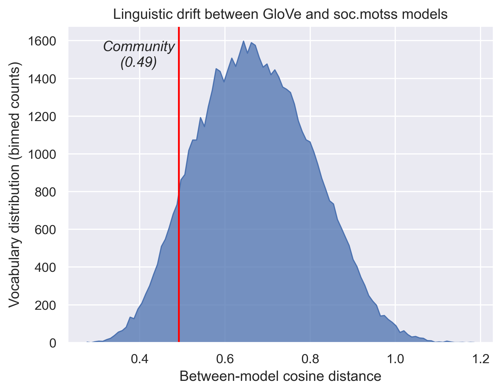

2 Geography, Gemeinschaft, Identity
Disentangling the Meanings of “Community” through Word Embeddings
2.1 Introduction
When LGBTQ people talk about community, does what they mean invoke a gemeinschaftliche, belonging- and social organization-oriented sense of the concept? Do they invoke Gemeinschaft to a greater extent than in more general and generic contexts? In answering these questions, this chapter responds, in part, to a call from Levine (2017) to investigate the power and ambiguity of “community” in contexts other than his own, where he shows how it operates as a rationale in the case of local governance; it also responds to a host of LGBTQ research that sometimes problematizes community (Orne 2017; Winer 2020) and sometimes takes it for granted (Frost and Meyer 2012). I demonstrate how the empirical everyday meaning of “community” in an LGBTQ social context invokes sociological understandings of Gemeinschaft, of community as a meso-level form of social organization (Brint 2001; Tönnies [1887] 2001) – albeit not exclusively. This evident salience of Gemeinschaft matters given the prevailing view of modern, urban society as instead promoting individualism and isolation (Putnam 2001; Simmel [1903] 1971), and how those individualistic trends have been intertwined with the historical development of LGBTQ identities (D’Emilio 1992).
To approach the question of how salient community as Gemeinschaft is for LGBTQ people, I examine how the concept of “community” shows up in one LGBTQ-centered social group. Founded in 1983, a Usenet group called soc.motss (“soc” meaning one of the many groups for social discussion, and motss standing for “members of the same sex”) is the earliest known virtual community built around a shared LGBTQ identity (Auerbach 2014). This makes it unique and important, because it sets a precedent and influences how later online groups become ubiquitous fora for discussing community, identity, and many other topics (Dym et al. 2019). The data I use from soc.motss are an archived corpus of individual messages sent to the group from the late 1990s through the 2000s. For a comparative baseline, I draw on a large volume of Internet text, not directly, but mediated through an off-the-shelf natural language processing (NLP) model. This baseline represents general or generic contemporary English-language discourse.
This chapter adopts innovative NLP methods to learn about community from how the word is used in naturally-occurring language. I systematically investigate the connotations of community across text using word embeddings (Mikolov et al. 2013) – a type of model that mathematically represents words based on the contexts in which they appear. Word embeddings are well-suited for investigating the semantic dimensions of social concepts and how they vary across contexts because – unlike other methods for computational text analysis – they move from surface-level words to underlying meanings and their relations (Arseniev-Koehler and Foster 2022; Stoltz and Taylor 2021). By first engaging in a close read of how “community” is represented in a general word embeddings model pretrained on large amounts of online text (approximating a generic social context), I lay the foundation for interrogating how the meaning of “community” in the context of soc.motss differs from that generic context, and how it remains similar. Specifically, I use dimensionality reduction and algebraic transformations to assess how related “community” is to three latent semantic dimensions – geography, Gemeinschaft, identity – in each of those contexts.
I hypothesize that, in a self-selected virtual community based on LGBTQ identity, if community itself is salient as a topic, then members will visibly talk about community as Gemeinschaft. If, by contrast, community is backgrounded and ambient, other senses of the word will be more evident in the localized embedding of the term. What I find is that the discourse in the soc.motss LGBTQ Usenet group uses community in the sense of Gemeinschaft to at least an equal extent compared with general English-language text. The key semantic difference is that it also deemphasizes the geographic aspects of community and replaces that with connotations specific to LGBTQ identities. In other words, I show that “community” in the general sense brings together two semantic domains – geography and Gemeinschaft; in a queer context the geographic connotation recedes to the background and a third domain, identity, emerges to take precedence. Community in the sense of Gemeinschaft turns out to be the common bridge between the general and LGBTQ-specific contexts.
2.2 Background
2.2.1 “Community” and the meanings of concepts
Community has a power and ambiguity that render it suitable for strategic rhetorical uses in everyday discourse. Two qualitative examples illustrate the shades of meaning that “community” can take on; together, these illustrate the range of variation that I might expect to see in a computational investigation of what community means as a folk concept. First, in the context of local governance, Levine (2017) observes that “community” becomes a “floating signifier of the good,” a halo of positivity to cover the real operation of local decision-making and to provide legitimacy for action. For Levine, this is harmful; he notes the impossibility of “the community” wanting one single thing as a uniform entity, and the harms of ascribing collective representational authority to whoever can show up to participatory events (Levine 2021). In his case, the word is constantly used in a positive and justificatory light, but so flexibly as to lose coherent meaning. Second, and in contrast to that wholehearted positivity, Winer (2020) finds that his interviewees have an ambivalent and distancing relationship with the “imagined gay community,” drawing a distinction between “the community” at large and their own social circles. Rather than pure vagueness, this points to another specific rhetorical use, to critique an in-group’s flaws rather than to justify desired actions. In these accounts, “community” assumes differing valences, with slippery or counterintuitive referents, but in each case the concept does important discursive work. I do not aim to create a taxonomy of these rhetorical strategies; instead I will show how all of these uses together add up and contribute to the overall semantic resonance that “community” takes on. Language, after all, is social and shared (Saussure [1916] 1972); later I will show how that shared foundation can be a springboard for understanding local deviations.
For fully understanding the social life of a complex concept, academic definitions are insufficient on their own, but worth reviewing as an anchor for comparison. “Community” is a phenomenon sociologists have elaborated on since Tönnies ([1887] 2001); they have created taxonomies of different types of communities (Brint 2001); argued over what communities count as “real” (Driskell and Lyon 2002; Rheingold 2000); and debated about what features – shared social networks/interactions or shared cultural/moral traits – are most fundamental to the creation and experience of it (Boessen et al. 2014; Vaisey 2007). What emerges consistently is the metaphor of a tightly knit social fabric, a group of people bound together by shared ties, shared culture, and possibly shared place.
However, the issue with using academic definitions of “community” as a starting point is that a strict definitional logic of concepts and categories does not apply “out there” in the real social world; classical logic may be useful for technical jargon, but it is not how ordinary human concepts work. Instead, everyday concepts are fuzzy and prototype-based (Bowker and Star 2000; Lakoff [1987] 2008, [1987] 2008; Monk 2022; Rosch and Mervis 1975; Zerubavel 2002). One way to see this is to think about how people figure out that something is a community in the first place. As Bruckman (2022) argues, we might decide that a virtual community like Wikipedia is a community through mental comparison to prototypes of community like a small town. A given example of community does not have to have all of a specific set of features in order to fall under the concept; rather, concepts and categories are bundles of “intensions,” inherently fuzzy constellations of characteristics and cues. “Community,” as an everyday concept, bundles together a spread of connotations; as I will show, the most notable of these are a geographic sense of “local place” and a sociological sense of “social group” or “object of belonging.” Because “community” encompasses both, even the most mundane use of community to refer to local place might still invoke the sentiment and connotation of Gemeinschaft. That is partly where the fuzziness and ambiguity of community as a concept could come from, and also part of the concept’s discursive power. However, distinguishing these two senses is necessary in order to open up a window into where and how the underlying meaning of Gemeinschaft and belonging appears in different discursive contexts.
Alongside these two senses of geography and Gemeinschaft, I examine the potential overlap between community and identity. In general, shared social identity characteristics are one potential basis for communities (Brint 2001).At the same time, in the context of the cultural sociology of markedness, Zerubavel (2018) notes that this basis is not necessarily available for unmarked identity categories: “the heterosexual community” is an empty, nonsensical statement, while “the LGBTQ community” is a common and sensical one. The open question, however, is about how community and identity are link when a virtual community like soc.motss is already centered around LGBTQ identities. Given the shared context, there is the possibility that those identities will be backgrounded rather than foregrounded in the context of discourse about community.
2.2.2 Using word embeddings to measure meaning
This project, then, uses an empirical, inductive, and computational approach to discover what community means and compare it to theoretical expectations derived from sociological literature. It integrates the sociological definition of Gemeinschaft in an iterative way, making this an abductive approach (Brandt and Timmermans 2021), rather than a purely grounded one (Nelson 2017). To examine the resonances and connotations of community in generic English discourse, word embeddings are my computational method of choice. Word embeddings are a relatively recent (Mikolov et al. 2013) computational operationalization of an old linguistic idea, called the distributional hypothesis (Sahlgren 2008). As Firth (1957) put it, “You shall know a word by the company it keeps.” Accordingly, these models represent words as a function of all of their immediate contexts. To give one example:
“The history of all hitherto existing society is the history of class struggles.” (Marx [1848] 1972)
An embeddings model would take this sentence and learn about the semantic connotations of the the word “society” from its position near “history”, “class”, and “struggle”; it might also learn linguistic features common to nouns from its position in relation to words like “is” and “of.” Naturally, a model needs many such examples as training data, to produce a single overarching numeric representation for each word in a vocabulary.
There are two main commonly-used word embeddings models – word2vec, based on a shallow neural network (Mikolov et al. 2013), and GloVe, based on cooccurrence matrix factorization (Pennington, Socher, and Manning 2014). These approaches are mathematically related to each other and the substantive differences in the resultant embeddings are minor, and so I choose one or the other for practical reasons of convenience and convention Nelson (2021). Specifically, high-quality and widely-used pretrained models have been released based on the GloVe method (Pennington et al. 2014), while a high-quality and robustly-engineered Python software package, gensim, implements the word2vec method for training new models on particular corpora (Řehůřek and Sojka 2010). These basic word embeddings approaches are foundational for a host of subsequently developed NLP methods, from contextual word embeddings models like BERT (Devlin et al. 2019) all the way to large language models like the GPT family of generative models (Brown et al. 2020). The simpler word embedding models offer the most straightforward and interpretable entry point for addressing the question of what “community” means in everyday English-language contexts.
A generic model with a robust, comprehensive view of as many contexts as possible would approximate “the” meaning of every word in a language. To train general models for a given language, the most common corpora are large and publicly accessible texts from the Internet, e.g., Wikipedia pages, newswire articles, social media, or anything else that can be conveniently crawled from the web. (Historical embeddings use digitized book corpora.) These pretrained models can be used for a variety of questions and tasks, but they stand in contrast to locally trained models derived from specific corpora. Of course, meanings of words do vary – over time, over space, and by other social characteristics (Bamman, Dyer, and Smith 2014; Soni, Klein, and Eisenstein 2021). A general model trained on easily-accessible data works to the extent that meanings are common or shared; of course, this flattens variation. Given the social characteristics of the authors of formal online texts like Wikipedia or news corpora, in terms of gender, race, education, nationality, etc. (Hargittai and Shaw 2015; Vrana, Sengupta, and Bouterse 2020), models trained on those data necessarily overrepresent hegemonic cultural viewpoints. This overrepresentation is a form of bias, but also a matter of substantive interest (Caliskan, Bryson, and Narayanan 2017; Garg et al. 2017; Jones et al. 2020).
Distinct from other text-as-data methods (e.g. keyword dictionaries or topic models), embeddings models create dense, distributed vector representations of words. In this way, word embeddings encode a relational model of meaning; they build up a system of signs (Saussure [1916] 1972), a vocabulary, in which distances (or their inverse, similarity measures) in a high-dimensional space can be calculated between every pair of words. This makes embeddings useful for social-science problems where meaning matters – especially where variations or changes in meaning are of interest. For instance, they have been applied fruitfully in cultural sociology to show how the distinct dimensions of class correlate and evolve over the course of the 20th century (Kozlowski, Taddy, and Evans 2019), and in political science for modeling ideology in parliamentary debates (Rheault and Cochrane 2020). An embeddings model can be thought of as distilling shared, declarative public culture (Lizardo 2017); Arseniev-Koehler and Foster (2022) go even further to argue that the training process is a reasonable heuristic model for actual cultural cognition.
But the dimensions the models learn are not themselves interpretable (nor are they consistent across models, meaning that different embedding matrices must be aligned for comparison). To derive interpretable dimensions, social scientists use anchor words and simple algebra. One common approach is to construct new binary dimensions through subtraction (Kozlowski et al. 2019; Taylor and Stoltz 2020), opposing pairs of concepts that can be thought of as antonyms (e.g. rich - poor, woman - man). This idea springs from the algebraic analogy tasks that first made word embeddings notable in NLP (e.g., king - man + woman \(\approx\) queen). While these binary oppositions have a clear basis in cultural sociology (Douglas 1966; Durkheim [1912] 2001; Saussure [1916] 1972), they are not the only possibility. They do not necessarily make sense for a concept that might bundle together multiple overlapping connotations or characteristics.
Instead, in this work, I deviate and borrow a different algebraic idea from NLP: “de-biasing” an embedding through orthogonal projection away from a target word vector (Gonen and Goldberg 2019). This approach originates in an attempt to mitigate gender bias in the words for different professions and occupations – which is undesirable for NLP tasks such as machine translation (Caliskan et al. 2017), even if it represents cultural associations or demographic facts about particular occupations that might be worth studying in themselves (Jones et al. 2020). That foundational work on this method makes it clear that it does not remove all the connotations of the undesired word – i.e., it does not fully succeed in de-biasing – but it is successful enough to use to disentangle the connotations of a concept like community. I can then compare how those connotations vary between a general context and the specifical local context of soc.motss.
2.2.3 An early LGBTQ virtual community: the soc.motss Usenet newsgroup
My case study is an early virtual community, an LGBTQ Usenet group called soc.motss. The soc.motss archive spans a key time period when the position of LGBTQ people in American society is shifting towards greater acceptance and equality, centered on the late 1990s and early 2000s (see Figure 2.1 below). It captures LGBTQ discourse on the heels of the Don’t Ask, Don’t Tell military policy (1993) the Defense of Marriage Act (1996), at the early end of a two-decade-long shift in public opinion in favor of LGBTQ equality (Rosenfeld 2017). Simultaneously, the legal landscape starts to change, from Lawrence v. Texas decriminalizing same-sex sexual relations in 2003 to Obergefell v. Hodges legalizing same-sex marriage in 2015.
Usenet is a distributed system for sharing electronic messages which predates the contemporary Internet (Rheingold 2000), organized into topical groups such as alt.atheism or rec.motorcycles (to take two examples from the “20 Newsgroups” dataset (Lang 1995)). Some of these groups are reported to have had a strong sense of community, while others were known for their hostility (Baym 1994; Dame-Griff 2019). Usenet is of interest because the moment of its heyday is when people were demonstrating that virtual community was, in fact, possible (Calhoun 1998; Driskell and Lyon 2002; Hampton and Wellman 2003; Rheingold 2000). Moreover, as boyd (2014) points out, even if particular platforms are passé, the social processes that unfold on them are not. Usenet groups are well-suited for studying the creation of community using computational text analysis methods because they are both conversation-oriented and text-based (McCulloch 2019); these kinds of virtual interactions can have similar feedback effects to those associated with face-to-face interaction rituals (DiMaggio et al. 2018).
Usenet preceded the period when the majority of people in the United States used social media, and is instead from a time period when virtual spaces provided an outlet for outsiderness (boyd 2014). Soc.motss members are a self-selected group, both in their avant-garde usage of technology and in their desire to seek out LGBTQ community spaces. They are described as more introverted on the whole, and so these individuals might not have had as much access to or comfort in in-person LGBTQ spaces like gay bars (Auerbach 2014). As were other virtual communities of the time (Rheingold 2000), they are likely disproportionately concentrated in tech centers and centers of gay culture like the Bay Area. Despite that geographic distribution, however, soc.motss affords the opportunity to use digital technology to find LGBTQ community in a way that potentially transcends geography.
Because of stigma and isolation, LGBTQ people may be especially predisposed to seek out queer community in digital spaces. The internet has long been recognized for its potential for marginalized groups, given the possibility of anonymity and the ability to manage contexts to control the disclosure of identities in unwanted ways (boyd 2015; Mehra, Merkel, and Bishop 2004). As such, LGBTQ people can use virtual communities for connection and support that may be lacking in offline social spaces (Dym et al. 2019). Corroborating this potential, LGBTQ groups and interests have been present and visible since the earliest virtual spaces came into being(Auerbach 2014; Rheingold 2000). The continued utility of technology for LGBTQ community-building is evident in the way that LGBTQ people have continued to act as early adopters of new technologies for digital social life (e.g., mobile and location-based platforms (Orne 2017)) through to the present day.
Soc.motss – where “motss” stands for “members of the same sex” – was oldest and largest LGBTQ Usenet group. According to a history recounted by Auerbach (2014) in Slate, it was founded in 1983 (as net.motss), not long after Usenet came into existence in 1980. In terms of case selection, soc.motss is worth studying not because it is typical or representative, but because it is unique and historically important. As “the first gay space on the Internet” (Auerbach 2014), it influenced the many queer spaces that would come after it; as one of the largest spaces of its time period, it provides a sufficient corpus for modeling with word embeddings.
An archived version of the soc.motss FAQ from 2001 describes the group as follows (in a section headed ‘Our “we”’):
Soc.motss serves non-heterosexual Internet communities. To signal inclusiveness, we use the acronym LGBTO, for Lesbian, Gay, Bisexual, Transgendered and Others, “others” meaning supportive straight people. The newsgroup is a predominantly non-heterocentric space where we can discuss issues of importance to our communities.
Elsewhere, the FAQ provides ample evidence that this is a cohesive group and a virtual community by any definition of the term. It has norms for participation, a group discursive style (Eliasoph and Lichterman 2003), and community-building events like in-person meetups (“motss.con”) (Auerbach 2014; Rheingold 2000). Of course, there were other LGBTQ newsgroups as well, such as soc.support.youth.gay-lesbian-bi or the several trans Usenet groups Dame-Griff (2019) has already studied. Few of these are large enough to support training distinct models, and it would muddle the analysis to combine many potentially distinct group cultures and discursive styles together in one corpus. On its own, soc.motss offers a well-defined, prototypical early LGBTQ virtual space, in which to investigate how LGBTQ people construct the meaning of community together.
2.3 Data and methods
I use two word embedding models to compare how the term “community” between the Usenet soc.motss corpus and in contemporary English-language texts more generally. The general, generic model is a pretrained GloVe model, and the local, LGBTQ-specific model is a word2vec model I train on the soc.motss corpus. GloVe and word2vec are the simplest methods for creating word embeddings, and for each respective case I have chosen the highest-quality and most widely-used tool. I describe both models, the corpus, and the methods for comparison here, with the goal of determining how central the semantic dimension of Gemeinschaft is in the meaning of “community” in each context.
2.3.1 Pretrained model (GloVe, Wikipedia + newswire text)
I use pretrained GloVe embeddings (Pennington et al. 2014),originally trained on a full English Wikipedia corpus from 2014 and a newswire corpus called Gigaword 5. The rationale for combining those two corpora is that more data produces more stable and generalized embeddings. Prior social science researchers have found pretrained embeddings to be reasonably robust, stable, and generalizable (Rodriguez and Spirling 2020; Stoltz and Taylor 2020). They can be used to study, for instance, ideology in 20th-century politics (Rheault and Cochrane 2020; Rodriguez and Spirling 2020); but not race and gender in 19th-century literature, which is far enough removed in context that a locally-trained model would be more appropriate (Nelson 2021; Soni et al. 2021). Kozlowski et al. (2019), who use a similar set of historical embeddings, suggest thinking of the associations encoded in these embeddings as coming from a “literary public” with known and unknown biases compared to the general population. Those associations are shared to some degree with the meanings encoded in the soc.motss corpus; if that were not true, it would not be reasonable to make a comparison at all.
The GloVe model uses co-occurrences in the Wikipedia and newswire corpus to “embed” words in a 200-dimensional space, resulting in a 400,000 by 200 matrix. That is, there are 400,000 words in the full vocabulary of the model, the 400,000 most prevalent words in the corpus, and each word is represented by a vector of 200 numbers. Many of the words in the 400,000-word vocabulary are extremely rare in ordinary English, including proper nouns and foreign-language terms. Rare words add noise and reduce interpretability; to mitigate this, I subset the model vocabulary to the most common words. In the first section of the results below, I do this by intersecting the vocabulary with a second GloVe model pretrained on a corpus of text drawn from Twitter, for 150,396 words in total. In the second section, I necessarily must subset to the vocabulary held in common with the soc.motss corpus for model comparison.
The latent dimensions represented by each of the 200 numbers in a single word embedding vector are arbitrary, without intrinsic meanings. To interrogate how potential meanings for my focal concept of “community” are encoded in this GloVe model, I construct interpretable semantic dimensions through the following inductive steps:
- I select the 1,000 nearest neighbors to the word “community.” Distance in the 200-dimensional embedding space is measured with cosine similarity between word vectors, which potentially ranges from -1 to 1. A word has a cosine similarity to itself of 1. (Cosine distance, defined as 1 - cosine similarity, is used in some of the derived metrics I describe below. A word has a cosine distance from itself of 0.)
- I decompose this local neighborhood of 1,000 nearest neighbors, the words with the highest cosine similarities to “community,” through principal components analysis (PCA).
- I inspect the resulting PCA dimensions for the proportion of local variation they explain and for any potential substantive interpretation. I use the whatlies Python package (Warmerdam, Kober, and Tatman 2020) for interactive visual exploration. Here, even though the embeddings in the neighborhood of “community” do not fall into discrete clusters, I cluster them with K-means clustering to aid in interpretation.
- I average the vectors for extreme words (N = 10) along a PCA axis of substantive interest to “debias” (Gonen and Goldberg 2019) the focal word vector through orthogonal projection. This axis substantively contrasts geography-related words and Gemeinschaft-related words, with “community” squarely in the middle.
This process is interpretive and cannot be performed automatically. In principle, however, this method could be extended to other complex social-scientific concepts – for instance, “freedom” and “democracy,” as political scientists have studied (Rodriguez and Spirling 2020), or social class and its dimensions (Kozlowski et al. 2019).
2.3.2 Local corpus and model (soc.motss, word2vec)
I build my local corpus and model as follows. I download the full set of available posts from the soc.motss newsgroup archived in the Usenet Historical Collection (UHC), hosted by the Internet Archive. This archive contains nearly 300,000 posts spanning the years 1999-2013, with a peak in the early 2000s and a continual decline in post volume thereafter (shown in Figure 2.1). According to Dame-Griff (2017), there were no systematic attempts to archive Usenet before 1995. While I investigate other potential archival sources, the UHC archive is so much larger that I do not attempt to merge sources together. (The second available archive, from Google Groups, is less comprehensive; it has only 1,074 posts from net.motss, the first iteration of the group, for 1983-1986. The Google Groups soc.motss archive contains only 60,400 posts from 1986-2022 (though the most recent posts are entirely spam), with only 9,847 posts from before 1999-04-17, when the UHC archive begins.) Archives inherently risk being incomplete, but I believe this corpus is comprehensive enough to characterise the culture and language of the group in the early-2000s time period.
I load and preprocess the soc.motss UHC archive using Dame-Griff’s Python scripts, developed for analyzing transgender Usenet groups, strip quotes and footers from the text with scikit-learn (Pedregosa et al. 2011) tools intended for the 20 Newsgroups dataset, and lowercase and tokenize the text with the gensim package (Řehůřek and Sojka 2010). This preprocessing is relatively minimal, but I note that any computational text analysis can be sensitive to preprocessing choices (Denny and Spirling 2016; Nelson 2017).
I fit a word2vec model to the processed corpus using gensim (Řehůřek and Sojka 2010). Key word2vec model parameters are set at a vector size of 200, a context window of 6, and a minimum word occurrence threshold of 5. I use skip-gram with negative sampling as the model architecture and train for 10 epochs. The parameter choices I make are consistent with Nelson (2021), Rodriguez and Spirling (2020), and other social science research using word2vec models. Following Nelson (2021), I also bootstrap key estimates by fitting forty new models to create a 95% confidence interval. Because Usenet posts are relatively short documents, I bootstrap posts with replacement, not individual sentences.
After preprocessing and model fitting, there are 287,680 documents, 26,958,729 tokens, and 71,617 unique words in the final vocabulary (with the aforementioned minimum threshold for inclusion set to 5 occurrences). Of that vocabulary, 60,728 words also exist in the GloVe model’s vocabulary. The words found only in the soc.motss vocabulary are largely misspellings, concatenations of words, encoding errors, foreign languages (especially Spanish), and colloquialisms (especially gay slang, Usenet slang, and emotive language).
Notably, this corpus is larger than all six trans usenet groups that Dame-Griff (2019) has archived put together, and much larger than conventional Usenet data sets like 20 Newsgroups (Lang 1995) (which uses a smaller temporal slice from more groups). The corpus size is still on the lower bound of what might be desirable for model quality, but I believe my results below show that the model produces embeddings that are stable and robust enough (Antoniak and Mimno 2018) to validate the broad, high-level substantive patterns I find.
To complement the semantic dimensions derived from the PCA decomposition of the GloVe model, I create a third semantic vector of words related to LGBTQ identity. Unlike the other two semantic dimensions, I choose these keywords by hand based on domain knowledge and manual inspection of nearest neighbors. The exact words are therefore more ad hoc and less principled, but this is not an atypical approach; it is no different from previous studies that use keywords to create vectors for concepts like “power” (Nelson 2021) or “social class” (Kozlowski et al. 2019). To match the other dimensions, I pick 10 words: “lgbt,” “lgbtq,” “glbt,” “gay,” “lesbian,” “bi,” “bisexual,” “transgender,” “queer,” and “homosexual.” (“Gay” is the most common of these words in the soc.motss corpus, appearing 49,486 times; the rarest is “lgbtq,” appearing only 18 times.) As with the geography and Gemeinschaft dimensions, by taking an average the vector becomes more robust to the inclusion or exclusion of any given word.
When comparing the local soc.motss model to the pretrained GloVe model, I address one technical question and two substantive questions. At a technical level, is the local word2vec model high-quality enough to have face validity? Finding that it is, I then address two substantive questions. First, how different is the term “community” between the models, in a relative sense compared to other words. The same three metrics that I use to assess model quality also address this question, and set me up to answer the second, more important, substantive question – not how different but rather different how?
The first metric, a “query rank” correlation measure, comes from Rodriguez and Spirling (2020). It is the Pearson correlation between models of within-model cosine similarities for a word and every other word in the vocabulary. This metric can be interpreted as a general measure of embedding stability and model quality. The second and third measures come from Hamilton, Leskovec, and Jurafsky (2016a), who use two distinct applications of cosine distance to study semantic change over time. Unlike the first measure, these two require mathematically aligning the embeddings matrices to the extnet possible, using a matrix alignment method called orthogonal Procrustes (Hamilton, Leskovec, and Jurafsky 2016b). While originally temporal in nature, these measures are equally well-suited to comparing general and specific contexts. The second measure, called “linguistic drift,” directly compares the cosine distance of a given word across model. This captures regular change due to linguistic processes. In a temporal context, languages are constantly evolving (Saussure [1916] 1972); because some linguistic innovations begin in or are confined to particular subcultures – like the LGBTQ community – this metric is also useful for my atemporal comparison. The third measure, called “cultural shift,” is a second-order comparison metric, using the cosine distance of the cosine similarities of the nearest neighbors to the word. According to Hamilton et al., this second-order signal is more sensitive to “irregular” changes due to societal shifts, e.g., due to technological advances or social movements. For example, in their work, they show that the shift in meaning of the word “gay” – from happy to homosexual – is better captured by the “cultural shift” measure than the “linguistic drift” measure. I use all three metrics for a comprehensive picture of how much the term “community” differs between soc.motss and more general usage.
Only then do I have the confidence to tackle my core question: do the LGBTQ members of soc.motss invoke community as Gemeinschaft to a greater degree than in general English usage?
2.4 Results
2.4.1 Semantic dimensions of “community” in the general, pretrained model
I begin by examining the meanings of the term “community” as derived from a standard, generic set of word embeddings, a GloVe model pre-trained on Wikipedia and newswire text and released for public use (Pennington et al. 2014). As a general set of embeddings, the model necessarily encodes the cultural biases of those that produce formal, written online English text. By turning words into numeric vectors, word embeddings encode a relational notion of similarity. Thus, the primary way to understand what a given word “means” in a model is to examine the words that are most closely related to it. These are the words that would appear in similar contexts to that given word; they could be synonyms or otherwise semantically or functionally similar.
As an initial pass, I examine the 10 most similar words to “community” in the GloVe model, measured by cosine similarity. These are “communities,” “organizations,” “society,” “local,” “established,” “area,” “part,” “within,” “public,” and “council.” The specific words range from the near-identical (“communities”) to related but distinct concepts (“society”) to words that would fit together into phrases (“local community”). Among these nearest neighbors, both spatial and social dimensions are evident. A cursory interpretation might stop there. However, this narrow view of the local neighborhood in the embedding space around community does not provide a sense of which semantic dimension might be more important or how they might be related.
For a fuller and more structured view of what community means, I expand the set of most similar words from 10 to 1,000. These 1,000 nearest neighbors constitute a local neighborhood of words in the GloVe vocabulary, with the word “community” as the focal word. This neighborhood is a subset of the overall embeddings space of the model. To understand the semantic structure of this neighborhood, I need to mathematically transform this set of embeddings (i.e., a 1,000 by 200 matrix), because the 200 dimensions of the original vectors are not interpretable and do not have any intrinsic meanings. I transform the embeddings by decomposing them with principal components analysis, a method I choose for its relative interpretability compared to other dimensionality reduction methods (e.g., t-SNE). Table 2.1 shows the ends of the first six PCA dimensions from the nearest neighbors to “community” in the GloVe model. Unlike the mixed set of words that were the ten closest to “community,” each set of 10 words in the table qualitatively shows a reasonable amount of semantic coherence, and in some cases the opposition of each end of a given dimension is also interpretable. Note, however, that the original 200 dimensions of the embeddings space encode a substantial amount of subtle information that is lost with dimensionality reduction, so the proportion of variance explained by the first several dimensions is relatively low. (Kozlowski et al. (2019) have shown similar results in an experiment with PCA and with explicit cultural dimensions, so this is unsurprising.)
| Dimension 1 | Dimension 2 | Dimension 3 | Dimension 4 | Dimension 5 | Dimension 6 |
|---|---|---|---|---|---|
| n’t | cooperation | research | teach | populations | historical |
| we | promote | management | kids | populated | contemporary |
| if | governance | library | music | farming | political |
| do | awareness | science | teaching | areas | history |
| get | stakeholders | facility | religion | sustainable | founding |
| could | initiatives | university | contemporary | infrastructure | influential |
| what | sustainable | provides | teacher | vast | described |
| know | understanding | institute | traditions | cultures | cultural |
| would | commitment | facilities | tradition | population | role |
| really | implement | program | feel | coastal | movement |
| … | … | … | … | … | … |
| baptist | district | minorities | government | alumni | families |
| african-american | county | refugees | infrastructure | meeting | parents |
| encompasses | situated | arab | aid | met | workers |
| nonprofit | township | settlers | region | member | employees |
| methodist | nearby | orthodox | regional | joined | teachers |
| interfaith | near | ethnic | economic | university | volunteers |
| lgbt | village | jews | summit | attending | residents |
| community-based | suburb | muslim | nations | invited | kids |
| non-profit | town | christians | security | attend | homes |
| not-for-profit | located | muslims | cooperation | attended | educate |
Figure 2.2 focuses on the first two dimensions, effectively projecting the 200-dimensional vectors down into two-dimensional space. The first dimension (the x-axis in Figure 2.2) ranges from words like “if” and “we” and “not” to words like “not-for-profit,” “community-based,” “lgbt,” and “interfaith.” Based on the distributions of words along these dimensions, I label this first dimension as a linguistic dimension. It encodes distinction between common, functional words and words that are more complex and substantive. While important for structuring the overall space of meaning, this distinction is not relevant for my analysis, because it is linguistic and not substantive.
The second dimension (the y-axis in Figure 2.2), however, is more substantively salient. Ranging from words like “town” and “located” to words like “cooperation,” “governance,” “organizations,” and “collective,” it encodes what I interpret as a distinction between geography and Gemeinschaft. “Community” itself falls nearly in the middle between the two poles of this dimension. In the figure, I have highlighted three clusters derived from k-means clustering to aid in interpretation. The first cluster captures the functional linguistic words on dimension 1, which are not differentiated much on dimension 2; the second and third clusters separate out the more substantive words on dimension 1 into two semantic groupings: geography words on the high end of dimension 2 and Gemeinschaft words on the lower end.1
Because this second PCA dimension clearly reflects the contrast between community as space and community as Gemeinschaft, my analysis focuses on this dimension. Drawing on each end of this geography-Gemeinschaft continuum, I select the 10 words (from the 1000-word neighborhood) that are the most extreme on either end. Figure 2.3 displays these two sets of words again and shows that they do in fact fall into two distinct blocks – highly similar within each group, and highly distinct from the other group. By construction, the word “community” is highly similar to both groups – it quite literally bundles these two connotations together in a single concept. To produce a more robust vector measure for each underlying connotation of “geography” and “Gemeinschaft,” I average the 10 individual word vectors, as is common practice (Kozlowski et al. 2019; Waller and Anderson 2021).

Finally, I project the vector for “community” away from the averaged geography vector. Using the linear algebra shown in Equation 2.1, the “community” embedding (\(\vec{c}\)) is transformed so that the dot product of the new vector (\(\vec{c'}\)) with the geography vector (\(\vec{g}\)) is 0 (Warmerdam et al. 2020).
\[ \vec{c'} = \vec{c} - \frac{\vec{c} \cdot \vec{g}}{\vec{g}^2} * \vec{g} \tag{2.1}\]
By moving “community” away from the geography vector, I also move it toward the Gemeinschaft end of the continuum. The algebraic transformation “de-biases” (Gonen and Goldberg 2019) the new “community” vector of its spatial connotations. It creates a new concept vector – like the embedding “community,” but purged of its geographic element. I label this new vector community-without-geography – or, alternatively, community-as-Gemeinschaft.
Figure 2.4 is a two-dimensional representation of this process, illustrating the effect of projecting the embedding for “community” to create a modified concept vector. In the figure, the x-axis represents similarity to the new community-as-Gemeinschaft vector; the y-axis represents similarity to the averaged geography words. By definition, each vector has a similarity to itself of 1. The result of orthogonal projection is that the community-as-Gemeinschaft vector has a similarity to the geography vector of exactly 0, again by definition. This has two consequences: community-as-Gemeinschaft remains very similar to the original community vector and to the averaged Gemeinschaft vector. An alternative approach – subtracting out the geography domain – does not result in a vector with the same properties. I argue that the projection approach produces an embedding that means community in a purely sociological sense, rather than a spatial one. An equivalent projection can strip out the social connotations of community, leaving a vector representing community as a spatial concept alone. Both of these derived concept vectors provide a comparative tool for analyzing the meaning of community in the context of the soc.motss corpus in the next section, as well as a more general measurement tool in ways that I will outline in the discussion.
2.4.2 Semantic differences in an LGBTQ Usenet group
After fitting a word2vec model to the soc.motss corpus, I examine the neighborhood of words similar to “community” in this model, in order to determine what community “means” in this context. This allows me to investigate how LGBTQ usage of community in this corpus differs from usage in the more generic and general contexts that produced the GloVe model. The geographic and gemeinschaftliche semantic dimension vectors and the corresponding community concept vectors derived from them, alongside a third semantic dimension for LGBTQ identities arising from distinct patterns in the soc.motss corpus, are anchor points for comparison. These semantic anchors enable me to systematically compare of the connotations of the embeddings for “community” in each model.
In the soc.motss model, the 10 most similar words to “community” include words that are identical or thematically similar to words in the GloVe model (“communities,” “organizations,” “collectives”), words about queer identities (“glbt,” “lgbt,” “lgbtq”), as well as words related to religious entities: “keshet,” an LGBTQ Jewish organization, and both “metropolitan” and “churches.” (The 10th word is “webshots.”) The similarity between “metropolitan” and “community” is not a geographic reference, but rather a reference to the Metropolitan Community Church (MCC), an LGBTQ-focused Protestant church. With that context, spatial terms are absent from these ten nearest neighbors; the words that overlap are gemeinschaftlich in nature, and the words unique to the soc.motss context relate to identity.
Examining only 10 words is insufficient for systematic conclusions. As with the GloVe model, I then expand the window of similarity to include the embeddings for the 1,000 nearest neighboring words to the word “community,” and decompose this subset of embeddings with PCA. To exclude the rarest and most idiosyncratic words (e.g., uncommon proper nouns like personal usernames), I only include words shared between the GloVe and soc.motss vocabularies.2 The first six dimensions, shown in Table 2.2, are considerably less interpretable than those for the GloVe model. There are some thematic groupings; for instance, dimension 2 ranges from geographic words like “neighborhood” and “village” to religious words like “clergy” and “congregations.” This dimension comes closest to reproducing the geography-Gemeinschaft continuum of the GloVe model, although the semantic scope of the words at the latter end is much narrower. Many of the extreme words are duplicated across dimensions (e.g., there are similar religion-themed words at the bottom of dimension 3), making it difficult to label them distinctly, and many sets of words are semantically mixed or contain too many rare words or proper nouns to characterize. Qualitatively, this shows that while there is some overlap with the connotations of “community” found in the GloVe model above, the same structure of those meanings cannot be discerned here. Instead, more context-specific themes start to appear: for instance, “msm” (men who have sex with men) and “transgender” appearing alongside “outreach” in Dimension 3, and “bathhouses” occurring among “businesses” and other location-based terms in Dimension 4. Importantly, more words shared in common with the GloVe model’s nearest neighbors to the term “community” are evident, including spatial terms. This is why I now move beyond qualitative interpretation and turn to mathematical comparisons of the two models.
| Dimension 1 | Dimension 2 | Dimension 3 | Dimension 4 | Dimension 5 | Dimension 6 |
|---|---|---|---|---|---|
| subgroup | neighborhood | wellness | potpourri | officials | croome |
| deepen | scoured | stumbleupon | ahrens | centers | activists |
| subgroups | village | msm | irminsul | nonprofit | activist |
| disparities | thrift | transgender | troth | auspices | transgender |
| hindered | metreon | mobilization | weintraub | lockup | parade |
| inequalities | wildflower | nonprofit | yahad | disparities | quintero |
| personhood | mayfair | disparities | badb | epidemic | lesbian |
| institutionalize | etobicoke | outreach | gitlin | sectors | gay |
| salience | telmo | visibility | pittman | courtrooms | auckland |
| assimilate | area | gajic | pediatric | staged | |
| … | … | … | … | … | … |
| morristown | pastors | communion | clientele | gajic | universal |
| metropolitan | clergy | catholics | walkable | glbt | membership |
| sholom | tongzhi | parishes | influx | facilitator | haifa |
| alejandro | laity | congregations | communities | chatroom | stumbleupon |
| cla | churches | unitarian | bathhouses | queer | nypl |
| bradenton | advocacy | church | affluent | bisexual | affiliated |
| citywide | soulforce | congregation | areas | transgendered | metropolitan |
| auckland | rivalries | episcopal | businesses | newsgroup | user |
| rodeph | congregations | denomination | populations | poc | fellowship |
| montclair | interfaith | presbyterian | neighborhoods | webshots | webshots |
I use three quantitative measures – query rank correlation, linguistic drift, and cultural shift, defined in the methods section above – to systematically characterize differences between the soc.motss-derived and pretrained GloVe models. This is a necessary contextualing step before the direct semantic comparisons that follow. By situating the metric values for “community” in comparison to all other words in the vocabulary shared between the two models, I show, in a relative sense, how different “community” is overall between the general-English and LGBTQ-specific contexts.
This has the simultaneous benefit of evaluating the general quality of the soc.motss model, beyond its qualitative face validity. If every word embedding were to shift significantly, it would be as if LGBTQ people were speaking an entirely different language from the GloVe model’s corpus. That would in turn cast doubt on the premise that the corpus provided sufficient data for locally training a stable and valid word2vec model. This is not the case; for the vocabulary as a whole, the three measures are largely consistent, with moderate-to-high correlations between metrics.
However, the metric values for the word embedding for “community” are not consistent in the amount of change they indicate:
Figure 2.5 shows the distribution query rank correlations, for all 60,728 words shared between the GloVe model and the soc.motss model vocabularies. These values are the between-model correlations of within-model cosine similarities. Compared to the correlations that Rodriguez and Spirling (2020) report between a pretrained GloVe model and word2vec models trained on the Congressional Record corpus, which range between 0.3-0.5 for randomly selected words and 0.5-0.7 for political concepts, the distribution of correlation values is somewhat lower on the whole, but in the same range. (Rodriguez and Spirling pick out only a handful of words for comparison rather than systematically comparing every word in the vocabulary.) “Community” has a between-model correlation of only 0.151 (95% confidence interval from bootstrapped models: 0.116-0.153). This falls at the low end of this distribution and indicates only a weak association of all cosine similarities across the models.
Figure 2.6 shows linguistic drift (Hamilton et al. 2016a). These values are the between-model cosine distances for every word, after aligning the matrix of soc.motss embeddings to the matrix of GloVe embeddings. The cosine distance for “community” is 0.492 (95% confidence interval from bootstrapped models: 0.471-0.560). This is substantially below the average distance of 0.672, implying that by this semantic measure community differs less than the typical word. Subjectively, these distance values seem high in general – in a previous experiment using historical word embeddings from Hamilton et al. (2016b) to replicate the work of Kulkarni et al. (2015), I found that the word “community” shifts by a distance of only 0.403 from 1900 to 1990. By comparison, the word “gay,” which undergoes a strong shift in meaning, changes by a distance of 0.822 over the course of the same century. The GloVe and soc.motss corpora are from similar time periods, so I surmise that these differences arise from distinct linguistic styles – formal newswire and Wikipedia articles versus less formal social text (McCulloch 2019). (Different model architectures are another possibility.)
Figure 2.7 shows cultural shift (Hamilton et al. 2016a). Mathematically this is an intermediate measure between the other two – it is also a cosine distance, but of within-model cosine similarities to a given focal word, of the local neighborhood of words around that word. Hamilton et al. (2016a) develop this “cultural shift” measure on the premise that these neighbors are semantically relevant in a way that more distance words (which were included in the first correlation measure) are not. On this metric, “community” shows a slightly above average shift of 0.303 (95% confidence interval from bootstrapped models: 0.177-0.396, median cultural shift for all words = 0.264). The wide bootstrapped interval, however, implies that this is the least stable of all three measures.
Taken together, these measures show that “community” differs in meaning to some degree between the generic GloVe model and the local soc.motss corpus, but they offer no definitive conclusion on the comparative magnitude of that change.

Thus far, I have decomposed the structure of meanings for “community” in a general English language model and shown how it brings together geography and Gemeinschaft. I have fit a second word embeddings model on a corpus from the LGBTQ virtual community soc.motss, which shows some semantic overlap with general usage but not the same structure. I have compared the two models and shown a mixed picture of how distinctive this newsgroup’s usage of “community” is. With this thorough foundation, I am able to address the core question: how does the meaning of community in the context of soc.motss differ from the generic context, and how does it remain similar? If community-as-Gemeinschaft is salient rather than ambient in a virtual community for LGBTQ people, then I would expect that semantic dimension to predominate, to a greater degree than in the general case.
Using the semantic dimensions I derived from the GloVe model in the previous section, alongside the additional identity-related dimension I curated based on the soc.motss corpus and model, I investigate what changes and why between the two different embeddings for “community.” Because these averaged semantic vectors are intrinsically more likely to be closer to the “community” vector derived from the same model, I re-create each of them from the other model’s embedding matrix, and I show both sets for consistency. The soc.motss model matrix is aligned to the GloVe model matrix, as are the 40 bootstrapped models for a 95% confidence interval (although the values from the true corpus are in at one case systematically higher than the bootstrapped values). In total, I make 12 comparisons (3 comparison vectors x 2 source models for those vectors x 2 source models for the “community” vector), shown in Figure 2.8.
This key figure shows how “community” in the context of soc.motss de-emphasizes geography but foregrounds identity instead. At the same time, it retains the Gemeinschaft connotations of community.
- When the averaged vector of geographic words is derived from the GloVe model, the gap in cosine similarities is the largest among any of the comparisons: the soc.motss embedding for “community” has a cosine similarity with the geography vector of only 0.165 (0.108-0.185), compared to 0.594 for the GloVe “community” embedding. The gap narrows to near 0 when the geography vector is re-derived from the same 10 words in the soc.motss model, with a similarity of 0.398 (0.374-0.437) for “community” in soc.motss vs 0.404 for “community” in GloVe – but the following two semantic dimensions have wider gaps in the opposite direction when constructed in this way.
- The Gemeinschaft vector in the GloVe model is almost identical to the geography vector in its similarity to the GloVe embedding for “community” (0.586), but its similarity to the soc.motss “community” embedding increases to 0.398 (0.374-0.437) – still lower, but a narrower gap. Recreated with the same words from the soc.motss vectors, the similarities flip: the similarity to “community” from GloVe is 0.386 (almost the same as the comparable geography vector), but the similarity to soc.motss “community” is now higher, at 0.508 (0.440-0.511).
- The averaged vector for LGBTQ identity-related words is unambiguously more similar to “community” in soc.motss than in the GloVe model, no matter which model’s word vectors are used to derive it. The cosine similarities to the soc.motss “community” embedding are 0.497 (0.429-0.485) when derived from the GloVe model and 0.627 (0.585-0.641) from the soc.motss model (the highest within both sets of comparisons). These compare to similarities of only 0.367 and 0.333 for the GloVe “community” embedding respectively (the lowest in both sets of comparisons).
This approach offers clear, stable rankings and comparisons, showing that “community” as used in the language as a whole is equally similar to both geography and Gemeinschaft, and less so to identity. By contrast, “community” as used in soc.motss carries stronger connotations of identity, roughly comparable connotations of Gemeinschaft, and weaker connotations of geography.
Finally, to provide even stronger evidence to confirm that conclusion, I apply the orthogonal projections from the end of the previous section. These come from the GloVe model alone, and I compare them to the “community” embeddings from both models in Figure 2.9. (For reference, I also compare the two “community” embeddings themselves in the third row of the figure.) Both orthogonal projections of the GloVe “community” embedding – away from the Gemeinschaft words and away from the geography words – retain high cosine similarities to the original vector, 0.810 and 0.804 respectively. However, these derived variations of the community concept are not equally similar to the soc.motss “community” embedding. Community, in the context of soc.motss, is markedly less similar to the derived concept of community-without-Gemeinschaft (i.e., community-as-geography), with a similarity of only 0.374 (0294-0.393). By contrast, it remains just as similar to community-without-geography (or, community-as-Gemeinschaft) as it is to the GloVe “community” embedding overall, with similarities of 0.510 (0.451-0.523) and 0.508 (0.440-0.529) respectively. (The magnitude is lower than 0.804 because the comparison vectors are derived from the GloVe model originally.) This way of examining the semantic similarities and differences of “community” between soc.motss and general English usage confirms that Gemeinschaft is present in both.
2.5 Discussion
The structure of meaning around “community” in the general GloVe embeddings shows, mathematically, how the word bundles and links together two sets of connotations: on the one hand spatial or geographic, and on the other hand social or gemeinschaftlich. This dual structure might appear intuitive, but it was not predictable in advance.
This structure does not fully carry over into the local context of an LGBTQ virtual community. In soc.motss, the meaning of community is not totally alien or unrecognizable from the general meaning (and why would it be?), but it is clearly distinct. Across both contexts, the sociological element of community is present in everyday usage. In the soc.motss corpus, “community” retains the Gemeinschaft connotations of social organization and groupness, but incorporates markedly less of the geographic or spatial connotations of community. Instead, it substitutes language related to LGBTQ identities. Queer identities are salient and central to the way the members of soc.motss discuss community, at a time of significant political shifts toward greater societal acceptance and equality (Rosenfeld 2017); they are not absent, invisible, or ambient. Moreover, this case affirms the presence and visibility of LGBTQ community in the process of creating virtual community in general (Auerbach 2014; boyd 2014; Rheingold 2000).
Potential limitations of this work relate to robustness, scope, and generalization. While I am convinced that the findings I present here are robust, a key limitation of any text analysis work centers around corpus and model quality. It would be possible to do even more to evaluate the stability and viability of the locally-trained embeddings (see Antoniak and Mimno 2018), or to incorporate corpora from additional groups – although there is little evidence from prior work to expect that the results would differ dramatically (Dame-Griff 2019). This work also demonstrates that there is some payoff to closely interrogating the embedding representation of a single word, provided that the associated concept has enough theoretical and empirical complexity to warrant a close read. The downside, then, is that generalizing to other complex concepts is inherently slow and requires interpretative work.
This chapter analyzed the meaning of “community” at a discursive and cultural level. While I qualitatively contextualized the social environment of Usenet and the soc.motss newsgroup, I did not explicitly connect any social characteristics to experiences of and expressions of community. In the following chapters, I will bring in those characteristics, by characterizing how features of places relate to individual experiences of community and how features interaction networks relate to group expressions of community.
While there’s no evidence clustering would have been a better approach than dimensionality reduction, the consistency is additional evidence that the principal components are robust.↩︎
With more – or fewer – words overall, the PCA dimensions do not appear to remain consistent. By contrast, the PCA dimensions for the GloVe model neighborhood are more robust to taking different subsets of the vocabulary.↩︎